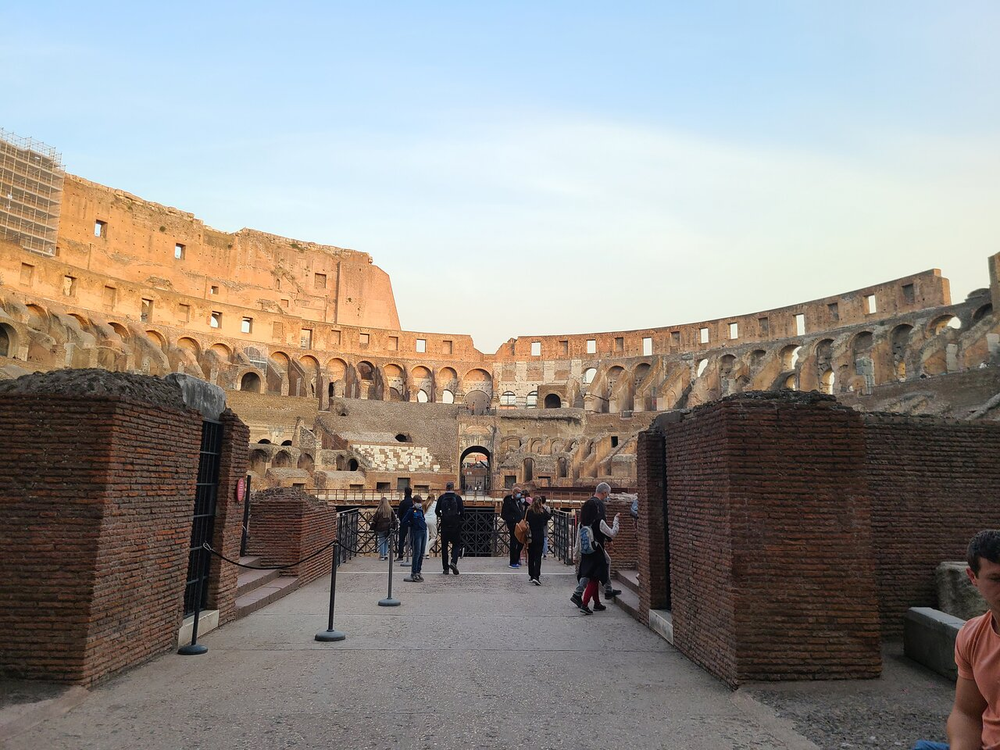
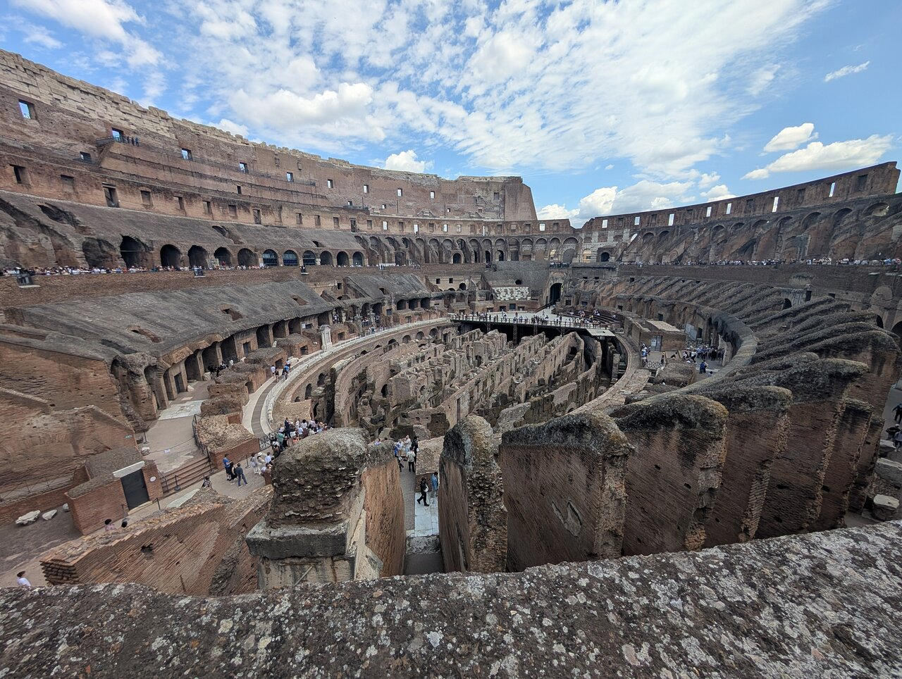
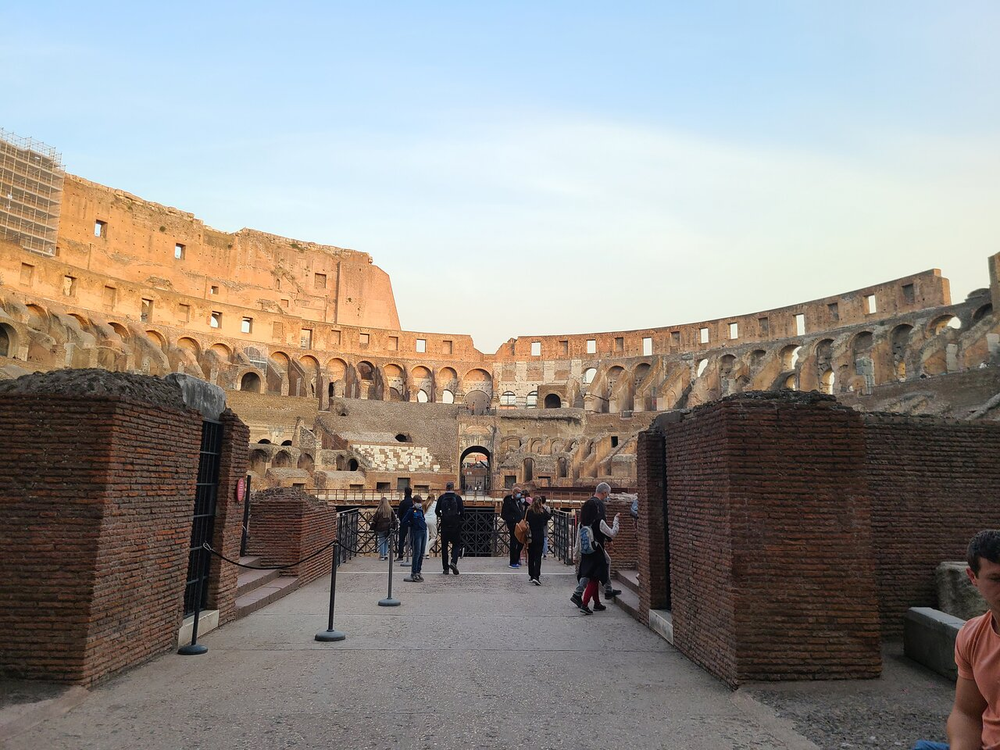
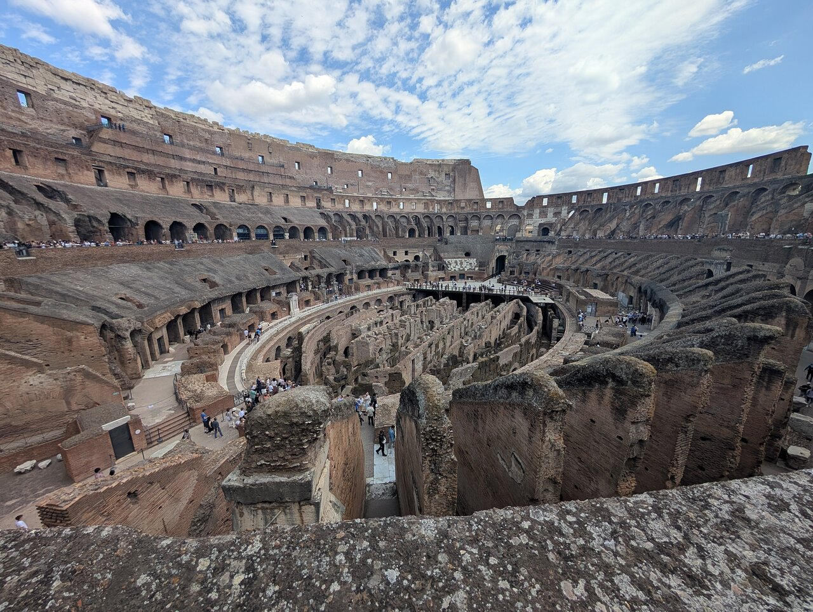

O Coliseu de Roma, também conhecido como Anfiteatro Flaviano, é um dos monumentos mais icônicos da história.
Foi construído entre os anos 70 e 80 d.C., durante o governo dos imperadores Vespasiano e Tito, com o objetivo de entreter o povo romano e demonstrar o poder do Império.
No local aconteciam lutas de gladiadores, caças com animais selvagens, execuções públicas e até batalhas navais simuladas.
importância arquitetônica é enorme: o Coliseu é uma das maiores obras da engenharia romana.
Ele tinha capacidade para até 80 mil pessoas, com arquibancadas organizadas por classes sociais.
Contava com um sistema de entradas e saídas rápidas, galerias subterrâneas para mover gladiadores e animais, e até um enorme toldo retrátil chamado velarium, que protegia o público do sol.
Culturalmente, o Coliseu é símbolo da grandiosidade romana, mas também da forma como o império usava o espetáculo como forma de controle e distração social.
Mesmo após séculos de terremotos, saques e abandono, ele ainda impressiona por sua resistência e importância histórica.
Em 2007, após uma votação mundial organizada pela fundação New7Wonders, o Coliseu foi eleito como uma das Novas Sete Maravilhas do Mundo, por seu valor histórico, cultural e arquitetônico. Atualmente, é um dos pontos turísticos mais visitados do planeta e um patrimônio da humanidade reconhecido pela UNESCO.
Curiosidades
Seu nome original era Anfiteatro Flaviano, em homenagem à dinastia dos imperadores que o construíram. O nome "Coliseu" surgiu depois, por causa de uma enorme estátua (o "Colosso de Nero") que ficava próxima ao local.
Durante alguns espetáculos, pessoas condenadas à morte eram colocadas na arena para enfrentar animais selvagens ou gladiadores.
Nos primeiros anos, o Coliseu era inundado com água para simular naumaquias, ou seja, combates navais. Era como um "cinema ao vivo" com navios dentro da arena.
Após o fim do Império Romano, o Coliseu teve vários usos: fortaleza medieval, santuário cristão, depósito de materiais e até pedreira de mármore para outras construções.
Recebe cerca de 7 milhões de visitantes por ano, e é um dos pontos turísticos mais populares do mundo.
Desde o ano 2000, sempre que uma de morte é abolida em algum país ou uma injustiça é revertida, o Coliseu é iluminado com luz dourada como símbolo da vida e da justiça.
 


